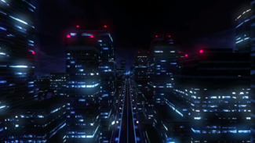

- Welcome to Touhou Wiki!
- Please register to edit. For assistance, check in with our Discord server or IRC channel.
Outside World
Outside World so̞to̞ no̞ se̞ka̠i Human World, Outer World | |
|---|---|
|
 A city in the outside world as seen in Urban Legend in Limbo
| |
| Location |
Outside Gensokyo |
| Residents |
|
Appearances | |
| Official Games | |
| |
| Print Works | |
| |
| Music CDs | |
| |
| Other | |
| |
The Outside World (外の世界 soto no sekai, also called the Human World (人間界 Ningen-Kai)[1] or Another World[citation needed]), is, in reality, the non-fictional world of fact and reality we all live in. In the Touhou Project, the outside world is commonly referenced by many of its residents, as shown throughout the games and manga, where it's location is outside Gensokyo and all its residents are aware of the outside world, whereas on the other hand almost all the creatures of the outside world are unaware of the existence of Gensokyo as the Great Hakurei Barrier keeps it all sealed away. Sumireko Usami once tried to expose Gensokyo to the outside world in Urban Legend in Limbo by breaking the barrier, but it's presumed she failed. While it was thought that no youkai live in the outside world anymore, some may be left as with the case of Mamizou Futatsuiwa.
General Information[edit]
Seen through Yukari Yakumo's gap and Urban Legend in Limbo, the outside world has a modernised civilisation that Gensokyo doesn't have.[2] Even though it's impossible to pass through the Great Hakurei Barrier, it's still very easy to enter by simply getting lost while wandering around, but humans are still unaware that they've entered another world. This leads them to great danger if they were eaten by youkai, should they fail to find the Human Village or the Hakurei Shrine. If they find the village, they'll be escorted safely to the shrine and be able to return to their world once again. They'll just think they entered a mysterious place and usually think it was just an illusion, then later forget about it. If outsiders refuse to return back to their world, they're forced to take up residence in the Human Village, however, they rarely choose to stay.
Our world is confusing for the residents of Gensokyo, and even Hieda no Akyuu doesn't fully understand it. However, it's been shown that Yukari Yakumo has outside world understanding. When an object is forgotten about and/or not seen by humans for a very long time, it gets transported to Gensokyo. Rinnosuke tends to find objects from our world as they sometimes fall near the Kourindou.
Maribel Hearn, Renko Usami and Sumireko Usami are currently the only named official characters known to live in the outside world today, in Kyoto, Japan, but Sumireko is unknown. These three people know the existence of Gensokyo, where Sumireko created the Secret Sealing Club to try and expose Gensokyo, much to Kasen Ibaraki's anger. Mamizou Futatsuiwa formerly lived in Sado before moving to Gensokyo to help Nue Houjuu in Ten Desires, and ended taking up residents in Gensokyo. The hobgoblins were also transported into Gensokyo by Yukari, and were one of the few youkai who still lived in the outside world during the modern era. Layla Prismriver formerly lived in a mansion that is now called a poltergeist mansion called the Ruined Western Mansion which was located in the outside world, but was transported into Gensokyo by the invocation of an unknown ritual. She may now be deceased.
Outside the Touhou Project, Isami Asama, Tatsumi Hakkaisan, Rumi Arie and Amakasu Barley Tenji, who are known to be at the Twilight Bar Room, which is the setting of Uwabami Breakers, are also somewhere in the outside world where only drunkards live, in Japan. Their exact location is unknown.
Some residences and locations in Gensokyo used to belong to the outside world. Examples include:
- The Moriya Shrine, moved from Lake Suwa to Gensokyo in order to gather more faith. It moved with Sanae Kochiya, Kanako Yasaka and Suwako Moriya;
- The Scarlet Devil Mansion, a European mansion that was moved to Gensokyo simply because it was forgotten. It moved with Remilia Scarlet and Flandre Scarlet;
- The Poltergeist Mansion, transported into Gensokyo by the invocation of an unknown ritual. It moved with the Prismriver Sisters;
- The Probability Space Hypervessel, implied to have stayed in Gensokyo the second time around. It carried Chiyuri Kitashirakawa and Yumemi Okazaki.
- The Hall of Dreams' Great Mausoleum, being based on the real life Hall of Dreams, was formerly of the outside world before people started to believe Toyosatomimi no Miko was fictional, and was transported to Gensokyo.
The Outside World at Different Times & Places[edit]
The Outside World in "the near future"[edit]
There isn't much directly stated about the outside world from the time period that Maribel Hearn and Renko Usami live in. Ghostly Field Club's synopsis states "an age that knows not of Gensokyo," Changeability of Strange Dream's synopsis states "changing future nightmares into sweet dreams," and both Retrospective 53 minutes and Magical Astronomy feature narratives that speak of various events that have happened to the world since after present times, showing that Maribel and Renko live in the future. However, one can infer some things based on various off-hand comments by Maribel and Renko.
For one thing, it doesn't seem to be a particularly happy time, as Maribel says "When was the last time I've seen children smiling so?" and "I thought I also always wanted to in such a country where I can see this kind of smile on these children."[3] It isn't completely devoid of happiness, as there are eating contests in Tokyo, beautiful displays of Mt. Fuji via a half-panoramic film on the train, and lots of chatter surrounding the moon tours. However, the scenic film of Mt. Fuji feels empty to Maribel and the Moon Tours are too expensive for her (and presumably the average person, given that the situation is likely based off of ZUN's feelings about wondering if an average person could ever afford going to the moon in his comments at the end.)
The outside world also appears to have environmental issues. Maribel comments that she's only ever seen synthetic bamboo shoots,[3] And the cake she's eaten in Magical Astronomy is made with synthetic strawberries. Retrospective 53 Minutes mentions that Mt. Fuji's beauty was restored due to the Mt. Fuji Revival Association. Humanity seems to have become obsessed with environmentalism, as Neo-traditionalism of Japan states "Due to extreme environmentalism, cities have been decorated to look like forests. Like a painted jungle, there is no natural vegetation."
Things are also highly advanced in general. The aforementioned Mt. Fuji train film and the moon tours being an example. Humanity has even launched a satellite into space filled with various forms of life that ended up developing its own eco-system (albeit without them realizing it). Magical Astronomy mentions that "It was just recently that gravitational force, which had been proven long ago and tormented physicists for a long time, was unified with the other forces," showing that the grand unified theory has been solved.
The Outside World in Phantasmagoria of Dim.Dream[edit]
Take note that the canonicity of the PC-98 and Windows can come into play. Yumemi Okazaki and Chiyuri Kitashirakawa came to Gensokyo in the Probability Space Hypervessel. In the world they come from, a grand unified theory has been completed, and it's normal to graduate college at the age of 11 and graduate school at 13.[4] It's not explicitly stated that they, along with the Probability Space Hypervessel, came from the outside world. However, whatever world they come from, it too has solved the grand unified theory.
Unfortunately, Maribel and Renko's ages (the two girls are university students) are never stated to compare against Chiyuri's age. But it's known that Yumemi's a human just like Reimu Hakurei.[5] This could imply she's from the outside world (unless there are other worlds where humans come from).
There are other statements that support that Yumemi and Chiyuri come from the future (which, combined with them being humans, would imply they come from the future of the outside world). Chiyuri snaps "Cut it out already! If you do that we'll end up as historic criminals!" when she stops Yumemi from (jokingly) threatening to blow up the planet. Rikako Asakura comments that Yumemi's technology appears to be 5 centuries ahead of Gensokyo's technology (Gensokyo, and thus its technology, was only really fully sealed off from the outside world a century or two ago). Also, Chiyuri's title is "Resident of Fantasy That Runs Through Time".
Yumemi and Chiyuri's world appears to have huge environmental issues, too, as Yumemi hopes that she can lecture on how magic and religion will solve her world's "energy and environmental problems".
As an aside, in both Yumemi's and Chiyuri's storylines and endings, they worry that the duplicates of them will cause an energy imbalance, which apparently is a crime in their world. Chiyuri also laments, "The Parallelism Police will crack down on us." This would seem to indicate that technology has progressed to the point where time travel or parallel dimensions is commonplace enough that a police force and laws had to be created to regulate it.
Seihou World[edit]
This is the primary setting of the Seihou Project games, where it's set in the future. Due to canonicity with the Touhou Project, for the world of Seihou to be "in the future" as part of the outside world is unclear. See article for more information.
Appearances[edit]
It's common for residents of Gensokyo to make reference to the outside world.
Spin-offs[edit]
- Scarlet Weather Rhapsody
The Outside World makes a cameo in Scarlet Weather Rhapsody. During Tenshi Hinanawi's final spell, she'll take you up high in the sky on pillars, to the extent where you can see both space and Earth, thus seeing over the horizon.
- Urban Legend in Limbo
For the first time, the outside world was shown as a stage location in Urban Legend in Limbo, as well as the first game to show fighting and other Touhou characters apart from Yukari Yakumo and Mamizou Futatsuiwa physically in the outside world on Earth. It's usually the final stage of a character's scenario, where you'll fight Sumireko Usami, an outside-world exception to using magic and flying. She is obsessed with other worlds and became a psychic. With this, she created a trap of sort, by spreading an urban legend across Gensokyo by collecting 7 Occult Balls in order to transport a Gensokyo resident to the outside world. This creates a gap that breaks the Great Hakurei Barrier, thus causing issues. By gathering information from this person, Sumireko will able to expose Gensokyo to the outside world. However, it's presumed that she failed. The stage itself is covered by large skyscrapers at night, and it's presumed that no outsider sees any of these fights in the sky because the streets appear to be empty.
Music CDs[edit]
As the stories of the ZUN's Music Collection mainly focus on Maribel Hearn and Renko Usami, the outside world is therefore the prime location of these stories.
Sub-Locations[edit]
Japan[edit]
Kyoto[edit]
Nara[edit]
Appeared in Dateless Bar "OLD ADAM".(Mt.Miwa and the Outlaw's Village are located in Nara prefecture.)
Nagano[edit]
Appeared in Neo-traditionalism of Japan. (Togakushi, Zenkō-ji, and Sinsyu's Sanatorium)
Sado[edit]
Kyushu[edit]
Appeared in Neo-traditionalism of Japan.(Amenonuhoko Stuck with Mounts Kirishima)
Moon[edit]
Located in the sky. Residents of Gensokyo are able to see the Moon every night.
TORIFUNE[edit]
Twilight Bar Room[edit]
The Twilight Bar Room is a place where only drunkards live. It's unclear where it's located. See this article for more information.
References[edit]
- ↑ Bohemian Archive in Japanese Red: Scarlet Mist Incident
- ↑ Strange and Bright Nature Deity: Chapter 25
- ↑ 3.0 3.1 Changeability of Strange Dream
- ↑ Phantasmagoria of Dim.Dream: OMAKE.TXT
- ↑ Phantasmagoria of Dim.Dream: Reimu's ending